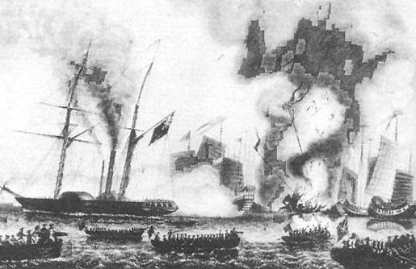

鸦片战争
鸦片战争（Opium War），即第一次鸦片战争(The First Anglo-Chinese war)。英国经常称其为第一次中英战争或“通商战争”，是1840年至1842年英国对中国发动的一场侵略战争，也是中国近代史的开端。
1840年（道光二十年），英国政府以林则徐虎门销烟等为借口，决定派出远征军侵华。1840年6月，英军舰船47艘、陆军4000人在海军少将懿律（George Elliot）、驻华商务监督义律（Charles Elliot）率领下，陆续抵达广东珠江口外，封锁海口，鸦片战争开始。
鸦片战争以中国失败并赔款割地告终。中英双方签订了中国历史上第一个不平等条约《南京条约》。中国开始向外国割地、赔款、商定关税，严重危害中国主权，开始沦为半殖民地半封建社会，丧失独立自主的地位，并促进了自然经济的解体。同时，鸦片战争也揭开了近代中国人民反抗外来侵略的历史新篇章。
1战争背景
战前清国
19世纪初，英国成为世界资本主义最强大的国家，并且建立了“日不落”帝国。而它在亚洲下一个主要的侵略目标就是中国。
自清朝初期到鸦片战争前夕，清朝仍然是一个独立的封建国家，曾经的国势，从乾隆末年就呈现出江河日下之势。封建制度已严重地阻碍着新的现代经济的发展。明代中叶产生的资本主义萌芽发展非常缓慢。到鸦片战争前，以小农业和家庭手工业相结合的自给自足的自然经济，始终占据中国社会经济的主导地位。土地兼并日趋严重，在全国成为普遍现象。吏治败坏，封建专制发展到了极点。清政府用“四书”、“五经”将人们的思想禁锢起来，对不满情绪或评议时政者，实行残酷镇压。国防空虚，军备废弛。对外关系上，清朝长期实行闭关政策，严重地阻碍着中国对外贸易和社会政治、经济的发展。
随着清朝统治的日趋腐败和对人民剥削压迫的加重，国内阶级矛盾日益激化，人民群众的反抗斗争此起彼伏。清王朝的统治面临深刻的危机，中国封建社会已经走到了它的尽头。
列强扩张
正当清王朝日趋衰落的时候，英、法、美各国的资本主义却在迅速发展。18世纪60年代起英国开始了工业革命，到19世纪三四十年代，大机器工业逐渐代替了工场手工业。英国工业的发展，工业产量急剧上升，“不断扩大产品销路的需要，驱使资产阶级奔走于全球各地”，努力寻找新的资源及产品生存空间。
法国是仅次于英国的资本主义国家，到鸦片战争前夕，法国工业产量居世界第二位。美国在鸦片战争前夕资本主义工业并不发达，但它正处于上升阶段。19世纪30年代，美国资产阶级正向南部劫掠印第安人和墨西哥人的土地，排除欧洲资本主义在拉丁美洲的势力，全面控制市场，因此，美国在19世纪中叶没有足够的力量侵犯中国。美国充当了英国侵略者的帮手，追随英国侵入中国。俄国1861年农奴制改革后，资本主义工商业迅速发展。俄国从北面虎视眈眈注视着中国，随时准备夺取中国的领土。
19世纪40年代，西方资本主义国家携工业革命的雄风，蒸蒸日上。欧美列强为了扩大商品市场，争夺原料产地，加紧了征服殖民地的活动，中国的周边国家和邻近地区，陆续成为它们的殖民地或势力范围。中国作为一个幅员辽阔的古老封建儒家奴化教育下的国家，自然成为殖民主义者侵略扩张选择的最佳对象。
贸易顺差
英国完成工业革命后，需要一个广大的市场作为货品出口地，而中国刚好符合此条件，能成为英国广大商品的倾销地。由于中国出产的茶叶、丝绸、瓷器等奢侈品在欧洲市场十分受欢迎，英国人希望中国能开放贸易。但英国出口的羊毛、呢绒等工业制品在中国却不受青睐，乾隆皇帝甚至认为中国什么都不缺乏，没必要与英国进行贸易，这使中英贸易为英国带来庞大的贸易逆差（入超）。而英国在18世纪开始实行金本位货币政策，而清廷则以银作为货币，由于与中国的所有贸易需以银两折算，令英国需要从欧洲大陆购入白银作贸易用途，金银一买一卖，令英国人利润受损。税率方面，中国对英国的入口货需要抽百分之二十的高税率，使英国大为不满。
鸦片输入
工业革命后，英国资产阶级竭力向中国推销工业产品，企图用商品贸易打开中国的大门。直到19世纪二三十年代，中国对英贸易每年仍保持出超二三百万两白银的地位。为了改变这种不利的贸易局面，英国资产阶级采取外交途径强力交涉，未能达到目的，就采取了卑劣的手段，靠“毁灭人种”的方法，向中国大量走私特殊商品——鸦片，以满足他们追逐利润的无限欲望。
2战争原因
鸦片贸易给英国资产阶级、英印政府、东印度公司和鸦片贩子带来了惊人的暴利。打破了中国对外贸易的长期优势，使中国由二百多年来的出超国变成入超国。
“鸦烟流毒，为中国三千年未有之祸”。鸦片大量输入，使中国每年白银外流达600万两，中国国内发生严重银荒，造成银贵钱贱，财政枯竭，国库空虚。
鸦片输入严重败坏了社会风尚，摧残了人民的身心健康。烟毒泛滥不仅给中国人在精神上、肉体上带来损害，同时也破坏了社会生产力，造成东南沿海地区的工商业萧条和衰落。
鸦片贸易给中国社会带来的严重危害，引起了清政府和广大人民的重视。清政府从自身利益出发，1821-1834年颁布禁令八次；统治阶级中一部分人目睹社会危机，要求改革弊政，在中国严禁鸦片。1838年12月，道光皇帝命林则徐为钦差大臣，派往广东禁烟。
派钦差大臣湖广总督林则徐前往广州负责执行，这就是历史上有名的虎门销烟。1839年3月，林则徐抵达广州后，勒令外国烟贩交出所有鸦片，并承诺不要再贩卖，保证”嗣后来船永不敢夹带鸦片，如有带来，一经查出，货尽没官，人即正法，情甘服罪“，并于6月3日-6月25日将大部分法律上属于英国人的鸦片库存全部销毁。英国人把中国人的禁烟行动看成侵犯私人财产，觉得不可容忍，促成战争的爆发。
1839年3月，林则徐会同两广总督邓廷桢、广东水师提督关天培在广州筹划禁烟。林则徐不假差役胥吏之手，知识界的士人与他同一阵线，召粤秀书院、越华书院、羊城书院三大书院六百四十五学子入贡院“考试”。这次名为考试，实为问卷调查，试题四道：“1.鸦片集散地及经营者姓名；2.零售商；3.过去禁烟弊端；4.禁绝之法。”自此林则徐掌握了所有烟商、贪官污吏之名单。在林则徐的主持下，将缴获的鸦片在虎门海滩当众全部销毁。在现场观看的广州城乡群众，无不拍手称快。
1战争过程
战前情况
1839年7月，九龙尖沙咀村发生林维喜案。英国水兵在村内醉酒闹事，打死村民林维喜，林则徐要求英国商务总监义律交出凶手，义律却自己轻判了事。
1839年8月15日，林则徐下令禁止一切贸易，派兵进入澳门，更进一步驱逐英人出境。此事因而成为鸦片战争的导火线。1839年10月1日，英国内阁以商务受阻及大英子民生命受到威胁为理由，作出“派遣舰队去中国海”的决定，虽然依据中国法律英国人无权在中国领土上存放鸦片。
1840年1月5日，林则徐根据道光帝旨意，宣布正式封港，永远断绝和英国贸易。1月8日英国“窝拉疑”号舰长宣布，自1月15日起，封锁广州口岸与珠江口。1月16日，维多利亚女王在国会演说，谓正密切注意英人在华利益及国家尊严。在中国发生的事件，已经引起我国臣民与该国通商关系中断，朕已极严重注意，并将继续注意这一影向我国臣民利益与王室尊严的事件。
2月，英国政府任命懿律和义律为正/副全权代表，懿律为英军总司令。
4月，英国国会对此进行激烈辩论，在维多利亚女王的影响下，最终以271票对262票通过军事行动 ，英政府始终未正式宣战，认为军事行动只是一种报复（reprisal），而非战争。
6月，懿律率领的英国舰船40余艘及士兵4000人（包括第18皇家爱尔兰联队、第26苏格兰来福枪联队、第49孟加拉联队、孟加拉工兵团和马德拉斯工兵团等）的机动舰队从印度出发到达中国海面，标志着第一次鸦片战争正式开始。该舰队有战舰16艘（其中3艘为装备有74门大炮的大型军舰），蒸汽军舰4艘，运输舰船28艘。战争爆发后，英国从本土又不断增援。除去被替换回国的舰船外，到1842年8月战争结束时，侵华英军战舰达25艘，蒸汽舰船15艘，医院船、测量船、运输船共60余艘。
英国出兵的深层原因据罗兹·墨菲的分析，则是为了拥有与巨大的中国市场自由贸易的机会，从而能够直接进入中国市场。并且希望清朝政府能够承认英国是平等国家。而中国因传统的天下秩序、五服朝贡制度等非平等外交，以天朝自居的傲慢态度，使英国无法容忍遭受轻视或忽视和遭受排挤，中国的态度在当时已经进入近代世界的国际社会中显得格格不入。英国将中国的拒绝看作是落后的表现，而部分西方人也有一种必要时诉诸武力把中国推向近代世界的使命感，认为这对双方都会带来利益。正是双方的自大，导致了正面冲突的爆发。
英军首次北上
战争爆发之初，中方只视英军为蛮夷，认为不具威胁。1840年6月，英军统帅兼全权代表义律领兵到达广州海面，并根据英国外相巴麦尊的指示，远征军封锁广州、厦门（今属福建）等处的海口，截断中国的海外贸易，并于7月攻占浙江定海（今舟山市），作为前进据点。此时，中国沿海地区，除广东在林则徐督饬下稍作战备外，其余均防备松弛。8月，英舰以惊人的速度攻城略地，抵达天津大沽口外，本来主张战争的道光帝，眼见英舰迫近，慑于兵威，开始动摇，1840年8月20日，道光帝批答英国书，令琦善转告英人，允许通商和惩办林则徐，以此求得英舰撤至广州，并派琦善南下广州谈判；同时，英方也以疾疫流行，秋冬将临，同意南下广东进行谈判。10月，琦善署理两广总督。林则徐、邓廷桢被革职。12月，琦善通过私人翻译鲍鹏与义律谈判，拖延时间。英军南下后，清廷下令沿海各省督抚筹防海口，并命两江总督伊里布率兵至浙东，准备收复定海。
义律失去耐心，决定战后再商。1841年1月7日，英军突然攻占虎门的大角、沙角炮台，清守军死伤700余人，帅船、拖船沉毁11艘。琦善被迫让步，1月25日与义律签订《穿鼻草约》，条约第一款就是将香港岛割与英国。第二天，英国军队就占领了香港岛。林则徐被发配新疆，他虽上书道光帝，力言必须禁烟和重视海防，使被道光帝斥为一片胡言。不过《穿鼻草约》由始至终并未经中国皇帝批准，而琦善也没有盖用关防印，因此该条约不具法律效力。
民众抗击英国
鸦片战争期间，中国东南沿海地区的广大人民，积极地支持和配合了清军作战，并自发地坚持反侵略斗争。侵略军所到之处，无不遭到当地人民的抗击。英军攻陷厦门，当地民众自动组织起来，袭击英军，迫使侵略军退守鼓浪屿。英军入侵浙江，浙江人民组织“黑水党”，狠狠地打击英军。侵略军进犯长江后，沿江人民以多种方式袭击英军，阻止英国舰队前进。
虎门广州之战
虎门广州之战（1840.12～1841.8）1840年12月，琦善与义律在广东开始谈判。由于英国提出的条件过于苛刻以及琦善擅自签订，使道光帝大为不满，道光帝便把琦善抄家革职，派奕山、隆文和杨芳赴广东指挥作战。1841年1月7日，英军也不满谈判的进展，义律先下手为强，出动海陆军攻占虎门的第一重门户--沙角、大角炮台，发起虎门之战。
道光帝闻讯下令对英宣战，派侍卫内大臣奕山为靖逆将军，并从各地调兵万余人赴粤。2月23日进攻虎门炮台，虽然部队英勇抵抗，但不敌英军，虎门炮台最终失陷。2月26日，英军又出动海陆军，攻破虎门横档一线各炮台和大虎山炮台，溯珠江直逼广州。广东水师提督关天培力战殉国。5月21日，奕山令水陆军1700余人，于黑夜分乘快船出动，挈火箭、喷筒，夜袭英船，掷火焚烧。5月22日早晨英军2400人反攻。清军溃退。5月24日，英军对广州发起进攻，一路占据城西南的商馆，一路由城西北登岸，包抄城北高地，攻占城东北各炮台，并炮击广州城。广州附近要地全失，18000多清军尽退城内，秩序大乱，在此形势下，奕山等竖起白旗求和，接受英方条件，签订《广州和约》，英国不但不率部撤离了广州，还勒索广州商家向英军支付了600万银元的赎城费。期间广州民间反英气氛炽热，英国侵略者的暴行，激起城北郊三元里一带民众自发武装起来进行抗英斗争。而奕山为了不被皇帝惩罚，便虚报战功，甚至将该战役的惨败说成大胜。
英军再次北上
英国政府对义律在广州所获侵略权益尚嫌太少，乃改派璞鼎查（Henry Pottinger）为全权代表来华，扩大侵略。1841年8月21日，璞鼎查率舰船37艘、陆军2500人离香港北上，攻破福建厦门，占据鼓浪屿（即第三次厦门之战），旋北进浙江，10月1日攻陷定海（1841年2月，英军以疾疫流行，放弃定海），10日陷镇海（今属宁波），13日占宁波。时英军兵力不足，遂停止进攻，等待援军。
厦门、浙东兵败后，道光帝又派吏部尚书奕经为扬威将军赴浙，并陆续调集兵勇以备反击。1842年3月，奕经以兵力已足，决定水陆同时反击，企图一举收复宁波、镇海、定海。3月10日夜，清军对宁波、镇海分别发起反击，接战均不利，纷纷撤回原驻地。进攻定海因风潮不顺而延期。3月15日驻宁波英军乘势反攻慈溪（今慈城镇）和城西大宝山等地，清军大败，退守曹娥江以西。道光帝见久经准备的浙东反攻又告失败，遂调盛京将军耆英赶赴江南，准备与英军媾和（见浙东之战）。
1841年5月29日，盘踞在广州北郊四方炮台的英军，闯入三元里骚扰抢劫。当地群众奋起抗击，打死英军数名。随后，全村男女老少在三元古庙集合，以三星旗为令旗，“旗进人进，旗退人退”，同时，还联络了附近的数千农民和手工业者，手持大刀、长矛，冒雨迎敌。而此时英军仅仅只有一个海军陆战队连。英军被困在牛栏岗，天降大雨，火药受潮，无法发挥出威力，展开肉搏战，一名英军死亡。英军派出两个水兵连，带着“雷管枪”（不怕雨天）前来增援。被围困两小时之后，英军撤退至四方炮台。第二天清晨，2万多民众高举三星旗，把四方炮台围得水泄不通。英军总司令传话给当地长官余保纯，如果不解除义勇包围，主力英军将攻打并尽屠广州城。余保纯清楚双方实力，也知道英军的枪炮不会永远受潮，于是劝退义勇，避免广州被屠，从此担上卖国贼的恶名。三元里抗英后，广东人民又以“社学”的形式，组织武装力量，开展反侵略斗争。
清军溃退
英国政府认为《穿鼻草约》所获权益太少，撤换义律，改派璞鼎查来华为全权代表，扩大侵略。1841年8月27日，英军再次北上，攻陷鼓浪屿、厦门、定海、镇海（今宁波）及乍浦（浙江平湖）。其中定海是第二次被攻破，总兵葛云飞及四千将士战死，英军也损失惨重。英军后来又攻打长江的门户吴淞，江南提督陈化成率军坚守西炮台，两江总督牛鉴欲求和，下令撤退被拒。牛鉴逃走，东炮台被攻陷，陈化成与部下死守西炮台，孤军作战，直至战死。吴淞的失利，使英军军舰开入长江。镇江驻防副都统海龄自闻乍浦、吴淞不守，认为汉人通敌，纵兵杀害汉人。7月21日，英军6600余人击败镇江城外绿营守军，越城而入，与1500蒙古八旗兵巷战，英军死37人伤129人，旗兵死约600人，海龄自杀。全城惨遭焚掠，废墟一片。镇江对岸的扬州绅商，惶恐万状，向英军交纳五十万两赎城费，免收军事占领。8月4日，英军直逼南京，清廷处于不利位置。
1841年9月30日至次年3月11日，英军分遣舰队还多次对台湾进行侵犯。由于守军准备充分，战术巧妙，取得了整个战争中罕见的胜利，仅俘获英军就有182人（见台湾抗英斗争）。
1842年5月，英军放弃宁波，集中兵力北犯。18日，攻陷浙江平湖乍浦镇。6月16日发起吴淞之战，江南提督陈化成战死。此后，英援军相继到达长江口外，璞鼎查不理耆英等人的乞和照会，以舰船73艘、陆军1.2万人，溯长江上犯，准备切断中国内陆交通大动脉运河。7月21日，英陆军6900余众，发起镇江之战，遭顽强抗击，被击毙击伤169人后攻陷镇江。8月4日，英舰进逼南京下关江面，随后英军从燕子矶登陆，察看地形，扬言进攻南京城。在英军坚船利炮的威慑之下，清朝钦差大臣耆英、伊里布和两江总督牛鉴，妥协退让，委曲求全，被迫在静海寺、上江考棚等处与英军议和。在谈判期间，由于英军的恶行引发了地方性的靖江保卫战，侵略者死伤13人后败退（从台湾、靖江之战看来，当今记载的英军伤亡数字不无可疑之处）。
1842年8月29日，耆英与璞鼎查签订不平等的中英《南京条约》。
4战争结果
1842年，清政府被迫在南京的静海寺与英国政府议约，双方共在寺内议约四次。8月29日，中国清政府全部接受了英国提出的议和条款，在英军旗舰”汗华“（亦译康华丽）号上正式签订了中国近代第一个不平等条约中英《南京条约》，满足了英国大多数的要求。主要内容：
1.割香港岛给英国。（丧失领土主权）
2.开放广州、厦门、福州、宁波、上海为通商口岸，允许英国人在通商口岸设驻领事馆。（丧失贸易主权）
3.中国向英国赔款2100万元。2100万元的成分是： 600万赔偿鸦片，300万偿还英商债务，1200万英军军费。（大量白银外流）
4.英国在中国的进出口货物纳税，中国与英国共同议定。（丧失关税主权）
5.英国商人可以自由地与中国商人交易，不受“公行”的限制。（丧失贸易主权）
1843年英国政府又强迫清政府订立了《五口通商章程》和《五口通商附粘善后条款》（《虎门条约》）作为《南京条约》的附约，增加了领事裁判权、片面最惠国待遇等条款。列强不欲英国坐大，纷纷与中国签订更多不平等条约。1844年7月3日，中美签订《中美望厦条约》。1844年10月24日，法国与中国签订《黄埔条约》，享有领事裁判权和传教权等。1843年10月8日，中英签署了《虎门条约》，重新规定了英国所享有的最惠国待遇和领事裁判权。从1845年起，比利时、瑞典等国家也都胁迫清政府签订了类似条约，中国的主权遭到进一步破坏。鸦片战争的失败和《南京条约》等一系列不平等条约的签订，使中国社会发生了根本性的变化。政治上独立自主的中国，战后由于领土主权遭到破坏，自给自足的自然经济解体，逐渐成为世界资本主义的商品市场和原料供给地，中国开始沦为半殖民地半封建社会。
5战争影响
鸦片战争的失败和一系列不平等条约的签订，使得中国社会性质发生根本性的变化。外国资本主义从中国得到了割让香港岛，赔款2100万两银元，开放广州、福州、厦门、宁波、上海五口通商，以及协定关税权、领事裁判权、片面最惠国待遇等一系列特权，严重损害了中国的独立主权。《南京条约》签订后，美国、法国接踵而来，乘机索取特权，强迫清政府签订了一系列不平等条约。鸦片战争标志着中国近代史的开端，从此中国开始经受更加深重的苦难，中国人民面临着更为复杂曲折的斗争。
政治
清政府开始一步步成为列强统治中国的工具，随着中国的领土、领海、司法、关税和贸易主权开始遭到严重破坏，中国逐渐由一个独立自主的国家沦为半殖民地半封建国家。
鸦片战争的胜败反映了当时东西方科技以军事为主的巨大差距，打破了清政府“天朝上国”的美梦，内忧外患纷至沓来，封建社会危机四伏，促使一批政治眼光比较敏锐的封建知识分子，进一步去探索和寻找中国社会摆脱困境与危机的良策。他们以传统经学为依托，以匡时救世为己任，对内主张整饬吏治，改革弊政；对外提倡学习西技，抵抗侵略，从而逐渐在地主阶级中形成一股经世致用的社会思潮。许多有学之士如林则徐、魏源等，开始对于西方科技的进步注意，并著书介绍西方事物。然而包括朝廷在内的绝大多数人，并没有因鸦片战争而改变对西方的看法，更不用说对于向来所轻视的“夷人”学习。清廷的战败并没有使其进行改革，反而继续行保守的闭关政策，引致后来的第二次鸦片战争后，才出现洋务运动等的自强救国运动。
经济
随着列强向中国倾销产品和对中国丝、茶等农副产品的收购，逐渐把中国卷入世界市场；原本占主导地位的自给自足的自然经济受到强烈冲击，中国日益成为世界资本主义市场的一部分。这在客观上促进了中国商品经济的发展，有利于中国民族资本主义的兴起。但是外国资本主义进一步激化了阶级矛盾，一定程度上致使了太平天国运动的爆发。
清廷对于《南京条约》的不平等性反应并不激烈，反而对中英两国文件采用平等体制感到不安。但是经济上，对外贸易迅速增长，同时也对外国开放了中国市场。
中英南京条约割让香港岛示意图 清廷对于《南京条约》的不平等性反应并不激烈，反而对中英两国文件采用平等体制感到不安。但是经济上，对外贸易迅速增长，同时也对外国开放了中国市场。 五口通商后，清朝海关及税率被英国控制，关税主权受到破坏，进口货只抽百分之五的低税率，外国商品大量倾销中国，无法保障中国国内工商业的发展。鸦片继续销售，白银外流，银价上涨，银贵钱贱的情况更加严重。英国输入中国的货品大增，1837年英国出口到中国的商品总价值为90多万英镑，到1845年已到达239万4千英镑。随着外商在华投资建厂，刺激了国内一批官僚、地主和商人开始投资近代工业的欲望。
新开的五个条约口岸中，长江口的上海最接近主要出口物资丝绸和茶叶的产地，又位于江、浙富庶之区，同时是国内南北海运的中间站，原在广州的英美商人及其雇佣的买办蜂拥而至，开设洋行。英美法三国相继沿黄浦江设立租界，并不断扩展，形成上海公共租界和上海法租界。后来上海公共租界的中心道路为纪念《南京条约》开放上海而被命名为南京路。中国市场大门的打开，使得商品贸易首先在沿海地区展开，工商业日益充满活力，大批新兴城市兴起，打下了沿海成为中国经济最发达地区的基础。
思想
鸦片战争后有一部分知识分子开始抛弃陈腐观念，注目世界，探求新知，寻求强国御侮之道，萌发了一股向西方学习的新思潮，对封建思想起到了一定的冲击作用。社会矛盾上，随着社会性质的变化，中国社会的主要矛盾也由地主阶级和农民阶级的矛盾，变成外国资本主义与中华民族的矛盾、封建主义与人民大众的矛盾。中国人民的革命任务，从反封建变为既反封建又反侵略。由此，中国从封建社会步入半殖民地半封建社会，是中国近代史的开端，也是中国旧民主主义革命的开端。
伴随着经济上的深入，国外的先进文化也同时传入中国：自然科学冲洗着国人的封建迷信和愚昧无知；国外的生活方式开始融入上层社会的生活；民主自由平等思想也在中国国内悄然传播，为后来的戊戌变法、辛亥革命开始打下思想基础。
6战争评价
总评
鸦片战争是中国抗击西方资本主义列强的第1次战争。英军以较少的兵力、较小的代价战胜了中国。究其原因，除了在客观上敌人兵器占有优势，战略战术运用得当，能集中大部兵力转沿海城市，占领经济命脉之地，战斗中常以正面攻击与侧翼包抄相结合之外，在主观上主要是清政府的腐败无能。政治腐败中国封建社会制度到了19世纪30年代，更加没落腐朽，不仅经济停滞，十分落后，削弱了战争赖以取胜的经济基础，而且整个统治集团内部，弥漫着享乐苟安，贪污腐化气息。
随着鸦片的输入，统治集团中的大部分人越来越依赖这种毒品来消磨荒淫无度的寄生生活。他们既接受内外烟贩的收买，又依赖这种毒品的走私，从中取得利益。有些走私船，公然插着两广总督或粤海关监督的旗号，威风十足地从伶仃洋驶进广州。清廷的贵族大臣，则从广东和沿海官吏那里，获得丰厚的贿赂。甚至皇帝也收取大量的西洋奇珍，成为这种“通商”关系里最大的受益者。因此，在禁烟与反禁烟、战与和的问题上，他们始终摇摆不定，在整个战争中，始终没有坚定的方针。从皇帝到将军、督、抚，战守无策，没有切合实际的作战方法。当战争受挫时，他们立刻求和；和议不成，又空喊作战。当议和投降比打仗有利于维系摇摇欲坠的统治时，他们就屈辱投降。
政治上的反动和腐朽，带来了军事上的无能和腐败辽阔绵长的中国海岸线，长期疏于战备，有边无防。以八旗、绿营为主力的清军，长时期养尊处优，懒于训练，军心涣散，纪律松弛；将帅素质低下，军事思想保守落后，不会组织、指挥打仗。鸦片战争爆发后，许多将领不谙敌情，株守建筑落后的营垒要塞，一线防御，不顾纵深侧后；许多地区的守军，远远看见敌军即开炮轰击，未等敌军靠近，便一哄而散，逃之夭夭，甚至举起白旗投降。宁波、余姚、慈溪、奉化、上海等地，竟不战自弃。而以林则徐、邓廷桢为首的抵抗派在反抗英国侵略者的斗争中虽有决心，有成果，但他们最终受到投降派的排挤打击，“徒有救国之志，而无尺寸之权”（诗人陆嵩语）。任用投降主义分子耆英、伊里布等去抵抗侵略者，无疑是缘木求鱼。
脱离人民、反对人民甚至镇压人民起来反抗侵略者 在民族自卫战争中，清朝反动政府不广泛动员、组织民众，单靠有限的军力在漫长的海岸线上到处分兵把口，本来是敌寡我众的形势，但在实际战场上却成了敌众我寡的形势。甚至当中国人民自发地起来抗击侵略者时，他们却怕得要死，荒唐地指责他们“潜相煽惑”、“为害甚大”，横加反对、破坏、镇压，直至堕落到去勾结外国侵略者，镇压爱国人民的抗侵斗争。这样的反动、腐朽的政府，是根本不可能取得反侵略战争胜利的。
史书评价
赵尔巽等《清史稿》：远人贸易，构衅兴戎。其视前代戎狄之患，盖不侔矣。当事大臣先之以操切，继之以畏葸，遂遗宵旰之忧。所谓有君而无臣，能将顺而不能匡救。国步之濒，肇端于此。呜呼，悕矣！